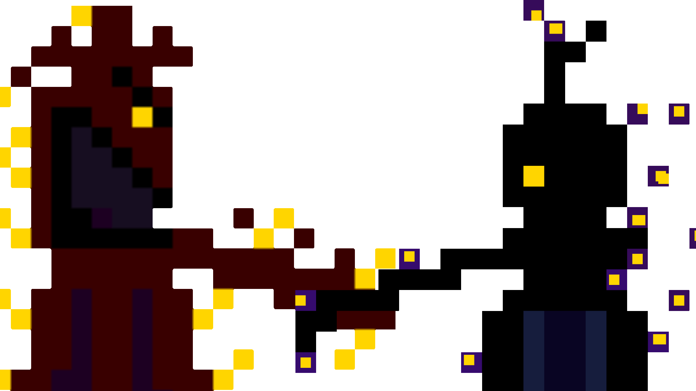

Modo Multijugador

Además de nuestro modo Singleplayer, Unanswered también ofrece un emocionante modo multijugador competitivo. Aquí, podrás enfrentarte a tus enemigos y demostrar tus habilidades en combate.
En este modo, te enfrentarás a otros jugadores en intensos duelos, donde cada disparo cuenta. El objetivo es simple: dispara a tus enemigos para ganar puntos y convertirte en el monstruo dominante del juego.
En Unanswered, solo los más hábiles y astutos alcanzarán el título de monstruo dominante. ¿Tienes lo que se necesita para ganar? Únete al combate y demuéstralo.
Edad recomendada
La edad recomendada del siguiente juego seria a partir de las 12 años.| Pais | Hora |
|---|---|
| España | 09:00 / 09:30 |
| Alemania | 09:00 / 09:30 |
| US | 03:00 / 03:30 |
| Canada | 03:00 / 03:30 |
| Rusia | 10:00 / 10:30 |